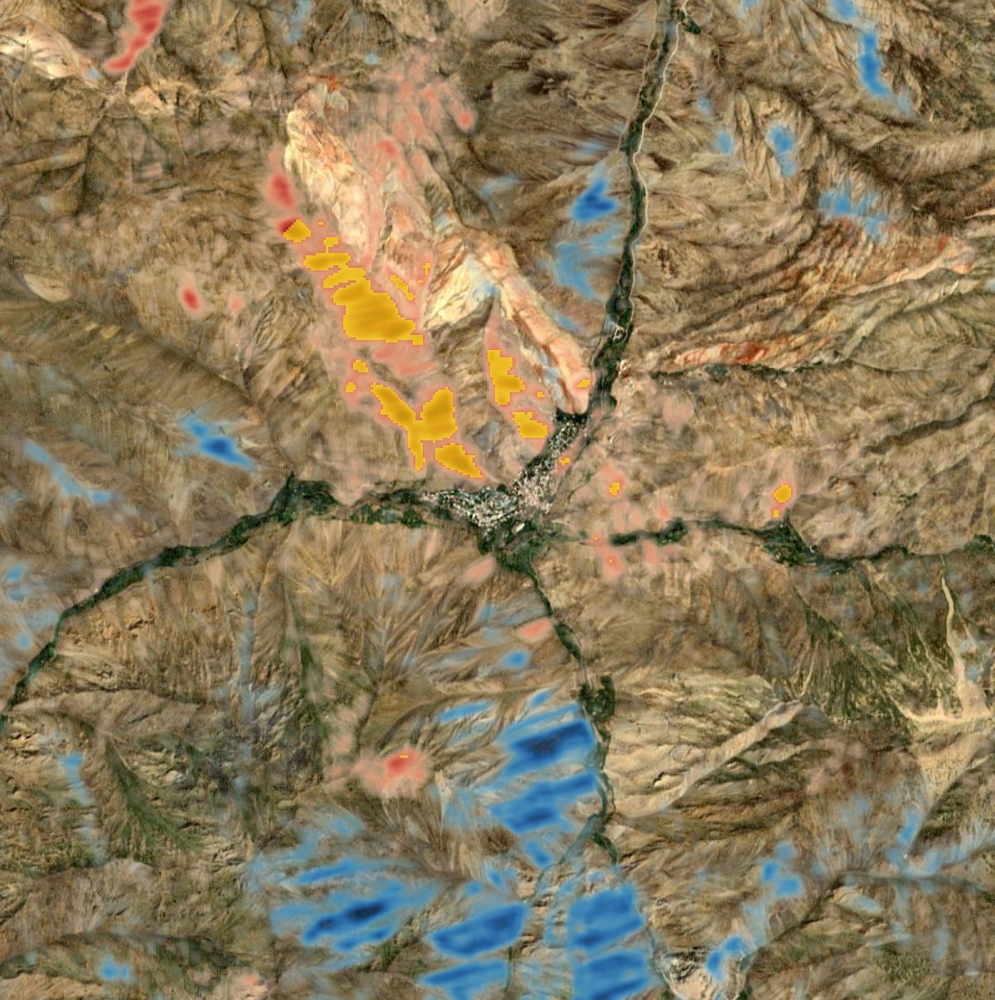

NASA Space Apps 2026 · Dancing with the SARs · Dushanbe
Seeing the ground move through clouds and darkness
NISAR, the NASA-ISRO radar satellite, images Tajikistan about every 12 days, day or night, in any weather. We compare its images over time to show where the surface changed and explain what the change most likely means.
- 12days between passes
- 24 cmL-band wavelength, sees through cloud
- 20 mpixels, every number reproducible

Four places, four honest answers
Each story says what happened, what the radar shows, how we tested it and how sure we are, including the event the radar missed.
How we turn radar into answers
No black box: four steps, all in our open code.
- 1
Read only what we need
NISAR files are 1.4 to 7 GB. We read small windows around each place straight from NASA's archive, every date on the same orbit.
- 2
Compare every pair of dates
Brightness shows roughness and water; coherence shows whether the ground stayed the same between two passes 12 days apart.
- 3
Test against all other dates
A change only counts if it stands out against the median of all other pairs, so we do not fool ourselves with one lucky image.
- 4
Check with the ground truth
We compare with news and Red Cross reports, optical Sentinel-2 images and terrain, and we say how sure we are.
How to read a radar image
Dark = smooth or water
Calm water and smooth ground reflect the radar pulse away from the satellite, like a mirror, so they look dark.
Bright = rough or wet
Rocks, debris, buildings and wet soil send more energy back, so they look bright. A jump in brightness can mean new debris or wetter ground.
HH and HV
HH is mostly the ground surface. HV appears when the signal bounces many times inside vegetation or rough material. Comparing them helps separate surface from volume changes.
Coherence
Coherence (0 to 1) shows how similar the ground stayed between two passes. If soil and stones are moved or washed away, coherence drops toward 0.